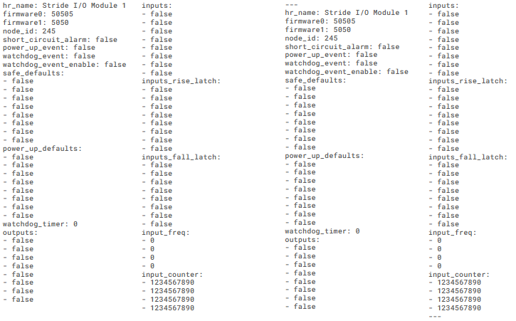
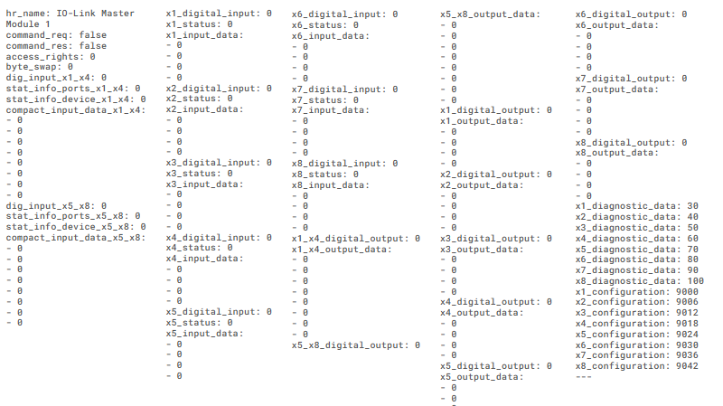
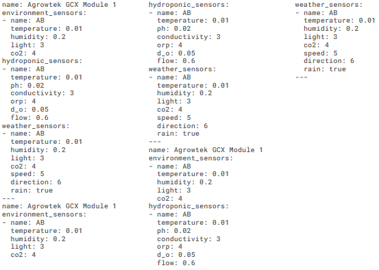

Architecture Overview

Remote Test Rig Demo
Terminal Output Overview
Device Outputs

Stride I/O Outputs

Summary of the Stride I/O Module’s current state and performance.
| Module | Node ID | Status | Firmware | Inputs | Outputs | Input Freq | Counter | Alarms |
|---|---|---|---|---|---|---|---|---|
| Stride I/O Module 1 | 245 | Active | 50505.5050 | All OFF | All OFF | 0 Hz | 1234567890 | None |
IO-Link Master Outputs

Summary of the IO-Link Master Module’s current state and performance.
| Component | Status | Inputs | Outputs | Diagnostics | Configuration |
|---|---|---|---|---|---|
| IO-Link Master | Connected | 8 digital inputs | 8 digital outputs | Available (port-specific) | Configured per port |
| Port X1–X4 | Status: 0 | Input: 0 | Output: 0 | Diagnostics: 30–60 | Config: 9020–9022 |
| Port X5–X8 | Status: 0 | Input: 0 | Output: 0 | Diagnostics: 70–100 | Config: 9023–9042 |
Agrowtek GCX Module Outputs

Summary of the Agrowtek GCX Module's current state and performance.
| Sensor Type | Location | Readings |
|---|---|---|
| Environment | AB |
Temp: 0.01°C Humidity: 0.2% Light: 3 CO₂: 4 ppm |
| Hydroponic | AB |
Temp: 0.01°C pH: 0.02 Conductivity: 3 ORP: 4 Dissolved O₂: 0.05 Flow: 0.6 |
| Weather | AB |
Temp: 0.01°C Humidity: 0.2% Light: 3 CO₂: 4 ppm Wind Speed: 5 Wind Direction: 6 Rain: Yes |